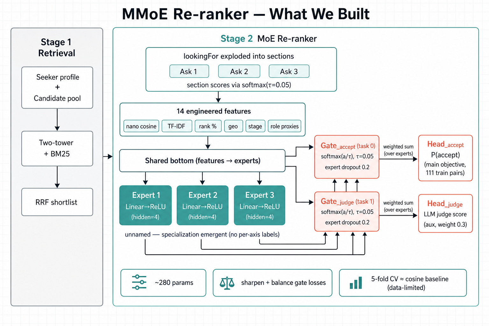
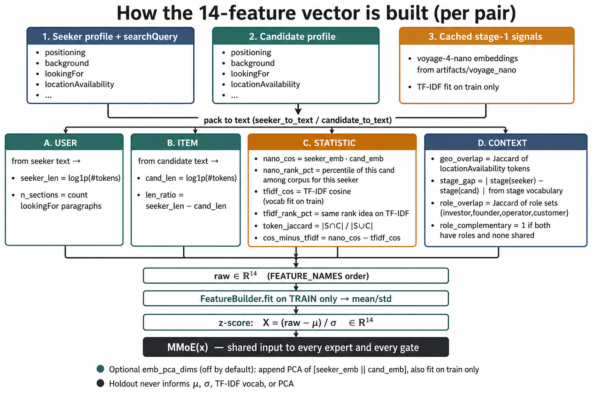

lookingFor fieldThe two-stage shape is right, and splitting the seeker's asks is the best-proven trick in this project. Making the experts' objectives learned rather than hand-named removes the fatal objection below — and a free experiment run since then settles how the experts' opinions should be combined.
failure_mode labels stop mattering. That objection is withdrawn —
see Problem 1.moe_reranker/, 124 tests passing. Headline: at 111 training pairs it is not testable, not broken. See §09.Keep: retrieve-then-rerank, and exploding the seeker's
lookingFor into sections. Both are backed by real numbers here.
Change: the five named experts have zero labels in the real data, and "weighted combine" is the wrong way to add up expert opinions — real declines look like a veto, not an average.
Do first: two cheap tests (one free, one ~$0.05) that tell you whether the whole premise holds — before writing any model code.
This is the only way to spend real compute without putting a heavy model on the fast lookup path. Correct answer to the 100 ms budget.
Already measured: it lifted pair AUC 0.579 → 0.596 and top-1 hits 27.6% → 37.9%. Splitting the candidate side lost on every metric. Your diagram splits the right side.
The bigbatch triplet run trades accuracy for recall (AUC 0.610 → 0.576). That's a weak final scorer and a good candidate generator. Stop reading its AUC drop as a failure.
In plain words: a seeker usually has several unrelated things going on at once — fundraising, hiring, finding customers. Squashing all of that into one embedding blurs them together. Any one intro is only ever about one of those threads, so letting that thread drive the score instead of the blur is a genuine win. That part of your idea is not speculation; it's the thing that already worked.
Every model in this project sits in a narrow band — and a cheating shortcut beats all of them
Pair ROC-AUC on the real 69-pair holdout. Bar length = lift above a coin flip, so the bars are anchored at 0.50 (zero lift), not at zero.
⚠ = not a model. Guessing from which seeker it is and nothing else. Full width = 0.71. Anchored at 0.50.
rrf_002 batch,
"who is the seeker" alone predicted the label at 0.687 — because 12 of 40 seekers rejected
every candidate. Any model handed the seeker's identity can learn that instead of
learning matching.Why this matters for your design: your gate reads the seeker's
lookingFor and nothing else. That is exactly the input needed to learn "this
seeker says no to everything" — a shortcut that scores higher than every real model in
the project. A gate will find it before it finds anything about side, stage, or role.
Resolved. If what each expert specializes in is a learned parameter rather than a name you assign up front, no per-axis labels are needed — the experts train on the final accept/decline signal alone. That is also how MoE is done in practice; expert roles are never hand-assigned, specialization is emergent. The original objection, kept below for the record, attacked a design that needed supervision this one doesn't.
What replaces it, smaller: you give up the consolation prize. Explainability was the MoE's fallback justification if accuracy came out flat, and unnamed experts don't explain themselves. You can recover it after the fact — inspect which pairs route to expert 2 and name it yourself — but nothing guarantees the split lands on anything a human would call a reason. It might split on "long profiles vs short profiles." The replacement question is "did specialization actually happen?", which is what the diagnostics in §05 are for.
Original objection, for the record:
Each expert is named after a failure mode — wrong side, wrong stage, wrong role, geo mismatch, prefs conflict. Those names come from the synthetic negative generator's recipe: a list of ways to deliberately build a bad pair. They are not something anyone observed in the real data.
failure_mode. So do 339 of 340
negatives in dataset_negative.json — the labels only survive in the staging
envelope (artifacts/synth/*/staged/, ~55 per mode), and promote.py
drops them.
Real negatives are intros production recommended and humans declined, with no reason recorded. So you'd train the experts on hand-built mismatches, then apply them to a population that may not break down that way at all. Nobody has checked whether real declines even have five buckets.
The structured_cot judge scores six weighted aspects with evidence and adds
them up in code. That is your architecture, with an LLM as every expert and the gate
weights set by hand. It lost on every single metric.
docs/llm-judge-experiment.md:149Why it failed, and why it transfers: averaging several independent sub-scores pulls everything toward the middle. A pair with one fatal flaw and five perfectly fine aspects still lands near 0.5, so it gets called a match. You can see it in the yes-rate jumping from 55% to 75% — it got less decisive, not more.
Real declines are almost certainly veto-shaped. One dealbreaker kills an intro; five nice-to-haves don't rescue it. A weighted sum cannot express that.
See the chart above: seeker identity alone scores 0.687, higher than every real model. Your gate is fed the seeker and only the seeker, so that shortcut is the easiest thing in its reach.
Exploding lookingFor gives you topics. Your experts are failure
axes. Those are two different ways to cut the problem, and the gate would have to
translate between them with no supervision on 131 pairs.
Sections per seeker: a fat middle and an absurd tail
Count of the 200 real pairs, by how many lookingFor sections the seeker has.
Cost is candidates × sections forward passes. At 50 candidates and a typical 4 sections, that's ~200 passes on the live path. The project rules out scoring each pair with a cross-encoder online — and there is still no latency benchmark anywhere in this repo. This is the one thing you cannot reason your way to.
The holdout is 69 pairs, 29 of them positive, and every model ever tested lands between 0.578 and 0.660. A five-expert MoE has enough knobs that the most likely outcome is picking a winner out of noise.
failure_mode labels neededImplemented architecture — moe_reranker/model.py
14 shared features → 3 tiny experts → one temperature-sharpened gate per task (τ=0.05) → mix → accept (main) + judge (aux) heads. Sharpen and balance losses pull the gate in opposite directions on purpose.

moe_reranker/ (n_tasks=2)
and moe_rrf/ (imports this model unchanged with n_tasks=1).The multi-gate in MMoE is one gate per prediction target, not one gate per expert. That's the whole reason the architecture exists — related tasks share experts while each task learns its own mixing weights, instead of being forced through one shared bottom.
So the question that decides whether MMoE fits isn't about experts. It's what are your tasks? With a single task, MMoE collapses into ordinary MoE and the architecture buys you nothing. But the task set here is unusually favourable:
| Task | Label source | How much data |
|---|---|---|
| Accept / decline (the real objective) | real human outcome | 131 train pairs — painfully scarce |
| Would this be a good intro? | LLM judge (0.641 AUC) | unlimited — ~$0.03 / 200 pairs |
| Topical relevance | RRF rank / TF-IDF cosine | unlimited, free |
A scarce main task plus abundant related auxiliary tasks is exactly the regime where MMoE earns its keep. Shared experts learn structure from the plentiful judge labels; the accept/decline gate then spends its 131 examples fitting mixing weights rather than an entire model. This also merges the "distill the judge" recommendation into the MoE plan instead of competing with it — judge-score becomes an auxiliary head, not a rival architecture.
| Slide's block | Yours (what ships) |
|---|---|
| User feature | seeker_len, n_sections — profile stats from seeker text (+ searchQuery) |
| Item feature | cand_len, len_ratio — candidate profile stats |
| Statistic feature | nano_cos / nano_rank_pct, tfidf_cos / tfidf_rank_pct, token_jaccard, cos_minus_tfidf — stage-1 retrieval signal |
| Context feature | geo_overlap, stage_gap, role_overlap, role_complementary — cheap proxies for the five failure axes |
How the feature vector is built — one pair → x ∈ R14
Raw signals from profiles + cached nano embeddings + train-only TF-IDF; assembled as 14 scalars, then z-scored with μ/σ fit on train only. That standardized vector is the shared input to every expert and every gate.

moe_reranker/data.py::build_features +
features.py::FeatureBuilder. Optional PCA embedding dims
(emb_pca_dims) are off by default — 1024-d raw embeddings would drown 111
training pairs.Note where the five axes went: not five expert heads needing labels, but a handful of input features needing none. Sizing, from the data budget: 3 experts, not 5, each tiny (linear or one small hidden layer). 131 real pairs will not support five deep experts whatever the gate does.
This is the most immediately useful slide. It's the difference between "we built an MoE" and "the MoE did something."
ḡmBarplot it. If one expert takes nearly all the weight, that's collapse — you have one model wearing a costume.
H(g(x))Catches the opposite failure: a gate that hedges evenly on every pair is just averaging, which is the shape that already lost.
Mutual information between the chosen expert and which seeker the pair belongs to. If routing is predictable from the seeker alone, the gate learned the 0.687 shortcut, not matching.
The third one isn't in the slides because the professor's setting (click-rate, many users) doesn't have this problem. With 40 seekers and 12 of them rejecting everything, you do. It's the diagnostic most likely to save you from a fake win.
Sharpening alone will collapse your gate. The sharp loss
Lsharp = (1/N)·H(g(x)) pushes every example toward one-hot — but nothing
stops every example picking the same expert, which is precisely what Diagnostic 1
detects. You need both terms, and they pull against each other:
The slides give you the first plus the detector for the second. Add the second penalty explicitly.
Skip top-K. The slide already flags it isn't differentiable (fixable with Gumbel-softmax, or noisy top-k plus a load-balancing loss), but with 3 experts top-K buys nothing — it's a compute optimisation for the dozens-of-experts regime. Temperature does the same job, differentiably.
Keep expert dropout. Randomly dropping experts during training is nearly free regularisation and a direct defence against one expert dominating. In a 131-example regime that's worth more than it is at Google scale.
This was the free experiment — the cached section-score matrix re-aggregated eleven ways, no GPU, no API spend. The question: when a seeker has several separate asks, is a candidate good because it fits one ask well (relevance-shaped: max / softmax) or bad because it fails one ask badly (veto-shaped: min / softmin / noisy-OR)?
It matters because it picks the MoE's combine rule before any model exists. And usefully, the
softmax mode is the professor's Idea 1 — g(x) = exp(a/τ) / Σexp(a/τ) — already
implemented, with the gate placed over sections rather than experts.
The more veto-like the rule, the worse it does — on both metrics, every step
Real 69-pair holdout (29 pos / 40 neg), voyage-4-nano, one shared embedding pass. Ordered most-veto → most-relevance. Bar length = lift above chance.
max takes the best hard-negative AUC overall
(0.6155). Reproduce with
PYTHONPATH=. .venv/bin/python scripts/compare_section_aggregation.py --holdout-only;
raw output in artifacts/section_aggregation_comparison.json.Read it honestly: the direction is consistent, the magnitude is not significant.
A paired bootstrap (20,000 resamples) puts softmax(τ=0.05) ahead of min by
+0.0146, 95% CI [−0.021, +0.051] — P(relevance better) ≈ 0.79. Every interval straddles
zero. What carries weight is not any single row but the monotone ladder: six ordered
configurations, and both metrics climb at every step in the same direction.
Decision: build the combine as a temperature-sharpened relevance gate with τ tunable. Drop soft-min. Note that τ=0.05 beats τ→0 (hard argmax, 0.596) — so slightly soft beats fully polarized, and "sharper is better" should not be assumed.
One clean side-result: noisy_or landed on exactly mean's
numbers to four decimals. That's expected, not broken — over the narrow cosine band this data
occupies, log p is nearly linear, so the geometric mean induces the same ranking as
the arithmetic one. The probabilistic veto has no teeth here because cosine 0.26 maps to p=0.63,
which is nowhere near "dealbreaker." Hard min is the honest test of the veto theory,
and it came last.
The first noisy_or implementation mapped cosines to probabilities by rescaling
against the min/max of the score matrix it was handed. But
_score_with_agg aggregates the positive and negative matrices in separate
calls — so positives were rescaled by the positive range (0.333–0.767) and negatives by the
negative range (0.265–0.908). An identical cosine became a higher probability on the
positive side.
p = (1+cos)/2, so no
statistic is estimated from the scores at all. Every other mode was immune because they compute
strictly within one record's own sections; noisy_or was the first to reach outside
its group. Pinned by tests/test_section_aggregation.py — a record's score
must not change based on which other records share its batch, checked for all 7 modes (20 tests,
all passing; verified the test fails against the old code).Step 0 is done. Step 1 has been downgraded from a gate to optional: it existed to validate the five named axes, and with learned experts there are no named axes to validate. Still worth $0.05 for feature engineering, but it can no longer kill the project.
Answered: relevance-shaped, with a tunable τ. Veto-shaped combining lost at every level, monotonically. Soft-min is off the table; the sharpened gate is in. Full result and error bars in §06.
Have the naive judge write a free-text reason for each of the 100 real declines, then cluster them. No longer a gate — with learned experts there are no named axes to validate. Its remaining value is feature engineering: it tells you which context features are worth building for the bottom network.
3 tiny experts over the shared bottom feature table in §05. Two gates — accept/decline (main) and judge-score (auxiliary, unlimited labels). τ tunable. Both entropy terms: per-example sharpening plus batch-average balancing. All three diagnostics logged from the first epoch, not bolted on after. Train within-seeker on the 249 triplets so the per-seeker base rate cancels by construction.
If expert usage is collapsed or routing tracks seeker identity, the accuracy number means nothing regardless of what it says. Write the win threshold down before running, keep the real 69-pair holdout for a single final shot, and remember the SE on any AUC here is ±0.070.
Distill the LLM judge into the re-ranker. You already have a teacher at 0.641 AUC with the best hard-negative performance in the project — and hard negatives are the only population that exists in production. You can generate its labels at scale, which is exactly what you can't do for the five failure axes. A small late-interaction student trained to copy the judge's score gets you the same goal using labels you can actually make. The expert decomposition can go inside that student later if you still want it.
Update: this is no longer an alternative — MMoE absorbs it. Judge-score becomes the auxiliary gate in the multi-task setup (§05), which is precisely the arrangement that lets the scarce 131-pair accept/decline task borrow structure from unlimited judge labels. Better than either idea alone.
One honest point for the MoE: structured_cot bought
explainability but not accuracy. If what you actually need to ship is "here's why
we recommend this intro," the MoE may be worth building even at flat accuracy. Just be clear
with yourself which of the two you're buying — the evidence says you probably can't have both.
The model from §04 now exists in moe_reranker/ — 3 experts, shared bottom over 14
engineered features, two gates (accept/decline + judge-score), τ tunable, both entropy terms,
expert dropout, all three diagnostics. Splits come from the canonical leakage-safe loader; 124
tests pass.
Train AUC climbs from 0.545 to 0.861 while train-dev AUC falls from 0.512 to 0.345, monotonically. Early stopping picks epoch 1, where the model has barely learned. That is not a tuning problem; 111 pairs with one bit of supervision each cannot support even 280 parameters.
A single 20-pair train-dev split (14 pos / 6 neg) has an AUC granularity of 1/84 and cannot adjudicate anything, so the real test is seeker-disjoint 5-fold cross-validation over the 111-pair train pool, four models on identical features:
Four models, same features, seeker-disjoint 5-fold CV
Mean AUC across folds. Error text is the fold-to-fold standard deviation — the number that decides whether any gap is real.
Full width = 0.56, anchored at 0.50. Fold-to-fold std: logistic 0.144, nano cosine 0.138, MoE single 0.065, MMoE 0.067.
PYTHONPATH=. .venv/bin/python scripts/moe_cv_compare.py --folds 5The honest verdict: the MMoE is not testable at this data size. It isn't broken and it didn't fail — the experiment has no power. The bottleneck is data, not architecture, which is the same conclusion Problem 3 predicted before any code existed.
Two things did survive. The multi-task gate beat the single-task version in 3 of 5 folds (+0.010 mean) — directionally what MMoE claims. And both MoE variants were half as volatile across folds (std 0.065 vs 0.144). The regularisation buys stability, not accuracy. That's a real property, just not the one you wanted.
Feeding the shared bottom two 1024-d embeddings, as the slide draws it, would put thousands of
parameters against 111 examples. The build uses 14 engineered scalars instead (cosine,
TF-IDF, retrieval ranks, geo/stage/role proxies), which is why it's 280 parameters and not 30,000.
Raw-embedding input is available behind --emb-pca-dims but off by default. This is
the concrete form of the sizing warning in §05.
Cross-validation says nothing is separable, so running the one-shot 69-pair holdout now would
burn the project's one clean measurement to confirm a null. --holdout exists and is
opt-in; it stays unspent until there's a model CV says is worth testing.
The first run reported normalized MI of 0.815 between routing and seeker identity, which reads as a five-alarm fire. It isn't. With 111 rows over 75 seekers, most seekers appear once, so knowing the seeker nearly determines the row and therefore its routing.
A note on that second test: my first version of it accidentally generated routing as
i % 3 alongside seekers as s{i % 6} — which makes routing a
perfect function of the seeker. The diagnostic flagged it and the test failed. The fixture was
wrong, not the code, but it was a fair demonstration that the detector works.
| Figure | Value | Source |
|---|---|---|
Real negatives with a failure_mode | 0 / 100 | data/dataset_negative.json |
All negatives with a failure_mode | 1 / 340 | data/dataset_negative.json |
| Staged synth pairs per failure mode | ~52–55 each | artifacts/synth/*/staged/ |
| Real train pairs | 131 | seed_split.json |
| Real holdout pairs (29 pos / 40 neg) | 69 | seed_split.json |
| Sections per seeker (range) | 1 – 126 | computed, 200 real pairs |
| Baseline nano — pair AUC | 0.579 | lookingfor-sectioning-findings.md |
| Seeker-sectioned (max) — pair AUC | 0.596 | lookingfor-sectioning-findings.md |
| Seeker-sectioned (softmax) — pair AUC | 0.598 | lookingfor-sectioning-findings.md |
| Hybrid + seeker-sectioning — pair AUC | 0.6483 | lookingfor-sectioning-findings.md |
| Candidate-sectioned — pair AUC | 0.568 | lookingfor-sectioning-findings.md |
| Top-1: baseline → sectioned | 27.6% → 37.9% | lookingfor-sectioning-findings.md |
| voyage-4-large (production) — pair AUC | 0.6086 | baseline-results-holdout.md |
| Qwen3-Embedding-8B — pair AUC | 0.6595 | hf-embedding-baseline-findings.md |
| LLM judge naive — pair AUC | 0.6409 | llm-judge-experiment.md |
| LLM judge structured_cot — pair AUC | 0.6336 | llm-judge-experiment.md |
| naive vs cot — decision accuracy | 0.6087 vs 0.5507 | llm-judge-experiment.md |
| naive vs cot — hard-neg AUC | 0.6543 vs 0.6267 | llm-judge-experiment.md |
| naive vs cot — yes-rate | 55.1% vs 75.4% | llm-judge-experiment.md |
| Seeker identity alone — AUC | 0.687 | rrf-pairing-pipeline.md (rrf_002) |
| Seekers rejecting every candidate | 12 / 40 | rrf-pairing-pipeline.md |
| Available within-seeker triplets | 249 | rrf-pairing-pipeline.md |
| Triplet run: AUC traded for recall | 0.610 → 0.576 | twotower-rrf-triplet-bigbatch-experiment.md |
| Step 0, run 2026-07-29 — section_aggregation_comparison.json | ||
| softmax(T=0.05) — pair AUC / hard-neg | 0.5983 / 0.6052 | this run (best combine) |
| max — pair AUC / hard-neg | 0.5957 / 0.6155 | this run (best hard-neg) |
| mean & noisy_or — pair AUC / hard-neg | 0.5940 / 0.5931 | this run (identical) |
| softmin(T=0.20) — pair AUC / hard-neg | 0.5931 / 0.5914 | this run |
| softmin(T=0.05) — pair AUC / hard-neg | 0.5871 / 0.5828 | this run |
| min (hard veto) — pair AUC / hard-neg | 0.5836 / 0.5724 | this run (worst) |
| softmax − min, paired bootstrap | +0.0146 [−0.021, +0.051] | 20,000 resamples |
| SE of any single AUC (Hanley–McNeil) | ±0.070 | 29 pos / 40 neg |
| Section count alone as a predictor | 0.5435 | ruled out as the 0.85 cause |